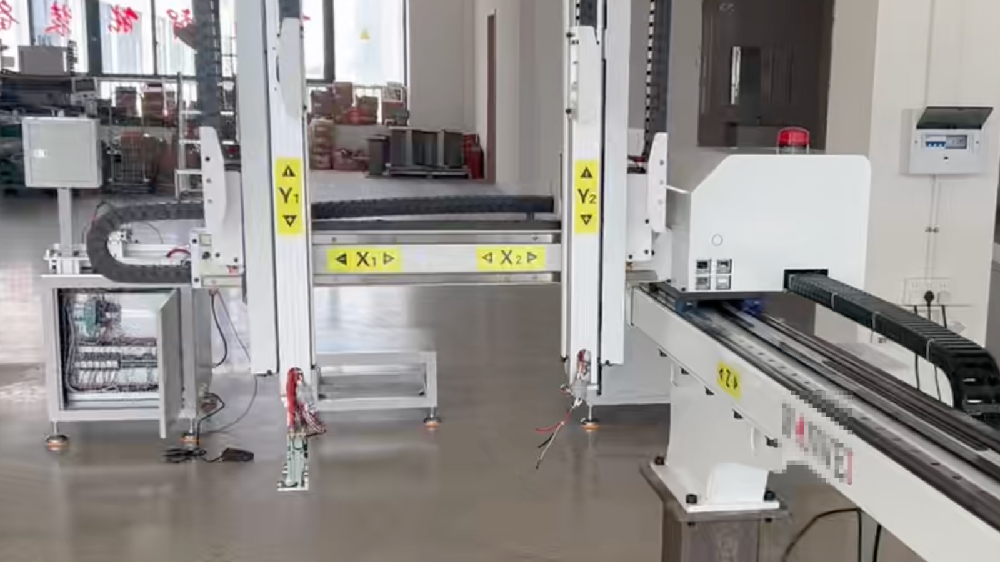

Original Taotao factory-visit image, cropped to remove a person. It provides general factory context and does not represent the supplier, product or order discussed in this article.
Your supplier has not replied for several days. A sample date is approaching, production was supposed to start, and your team is wondering whether the silence is a warning sign.
In early October, the first question should be simple: is the delay consistent with China’s published holiday calendar? In 2026, the official National Day holiday runs from October 1 to October 7, with October 10 listed as an adjusted working day. Individual factories may use different closure and restart dates, so the national calendar is context—not proof of a particular factory’s schedule.
A holiday can explain slower communication. It does not automatically explain a changed production plan, a new payment beneficiary, a missed inspection or a vague shipping date. The useful buyer question is not only, “Why are they slow?” It is, “What evidence should be available when operations restart?”
Classify the delay before reacting
Calendar-consistent
The delay fits the published holiday and the supplier’s previously stated closure dates. No material order term has changed.
Explained with evidence
The timeline changed, but the supplier provides a dated restart plan, responsible contact and measurable next milestone.
Unresolved
The explanation conflicts with earlier records, important terms changed, or the supplier cannot show the current order stage.
Do not turn Status 1 into an accusation. Do not turn Status 3 into a new payment or delivery promise without further checks.
Ask for a six-field restart snapshot
When the supplier reopens, request one written update that both teams can refer to. It should cover:
- Reopening date: the date the relevant office, workshop or subcontractor resumes work.
- Current order stage: specification confirmation, material preparation, tooling, sample, production, inspection or dispatch.
- Material and component status: what is on site, what is still ordered and what depends on another supplier.
- Responsible contact: who owns the next action and who can approve changes.
- Next measurable milestone: for example, sample photos, first-article approval, production start, inspection booking or cargo-ready date.
- Revised dates: the new milestone dates and the reason for every change from the last agreed schedule.
A sentence such as “We will arrange it soon” is reassurance. A dated milestone with an owner and a record is a control point.
Reconfirm anything that changed during the pause
Holiday timing should not become a shortcut around change control. Pause and verify if the supplier proposes a different:
- bank beneficiary, PI issuer, exporter or contracting company;
- material, component source, model or specification;
- factory, subcontractor or production location;
- sample, tooling or approved artwork revision;
- inspection arrangement, Incoterm® rule or shipping route; or
- deposit, balance-payment or cancellation condition.
A change may be legitimate. But the trust attached to the earlier arrangement should not automatically transfer to a new entity, component or timeline.
Match the evidence to the claimed order stage
| Claimed stage | Useful evidence | What it does not prove |
|---|---|---|
| Materials ready | Dated material list, identifiable photos, supplier delivery record | That all materials meet the final specification |
| Sample in progress | Current sample photos or video, revision reference, remaining steps | That the sample is approved or compliant |
| Production restarted | Dated production evidence tied to the model and order stage | That capacity, quality or completion date is guaranteed |
| Inspection booked | Written inspection date, scope, location and reference sample | That the batch will pass inspection |
| Cargo ready | Packing list, labelled cartons, quantity record and inspection status | That customs, carrier or final delivery dates are fixed |
Use this message after the holiday
Subject: Post-holiday restart check for PO [reference]
Hello [name],
I hope your team had a good holiday. Before we update our internal schedule, please confirm the current stage of PO [reference], your relevant reopening date, material/component status, the person responsible for the next action and the next measurable milestone with its date.
Please also identify any change to the company, beneficiary, specification, material, subcontractor, approved sample, inspection plan or shipping arrangement since our last written confirmation.
We will use this update to confirm the revised schedule and any verification steps required on our side.
Planning a supplier visit around the Canton Fair?
The official Canton Fair schedule lists Phase 1 of the 140th session for October 15–19, 2026. The phase includes vehicles, auto parts, motorcycles, bicycles, hardware, machinery, electronics and other industrial categories.
If you meet a supplier at a booth, record the legal exhibitor name and ask whether it is the contract seller, manufacturer, exporter or another entity. A booth, catalogue or product sample can begin a supplier conversation. It is not independent proof of factory ownership, production capability or model-specific compliance.
Buyer release-or-hold rule
Accept a revised schedule only when the current order stage, the reason for the change, the next milestone and the responsible parties form a consistent written record.
If the change affects payment, legal entities, specifications, manufacturing location, approved references or inspection, keep that part of the order on hold until the relevant verification is complete.
Official sources
- State Council of the People’s Republic of China — 2026 public holiday arrangement
- Beijing Government — English summary of 2026 public holidays
- China Import and Export Fair — official 140th Canton Fair schedule and categories
Related buyer guides
- China Sourcing Checklist: 12 Questions Before a Purchase Order
- Supplier Verification, Factory Audit, Inspection or Lab Test?
- Supplier Bank Details Changed? Verify Before Paying
- Factory Visits & Reviews
My banking and manufacturing-business analysis background makes me attentive to alignment among entities, documents, dates and explanations. It does not provide access to private banking information and does not turn one delayed reply into a financial conclusion.